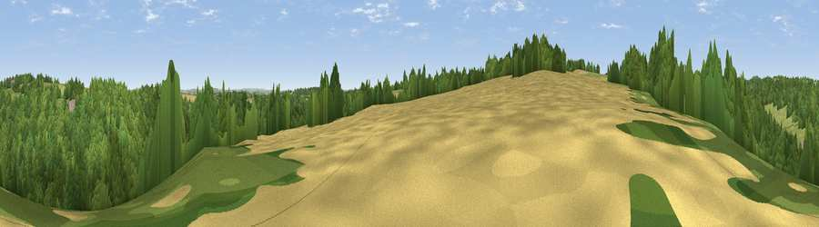

Viewpoint near Coalport
#43431 in England · top 95% of its area beats it · near CoalportThe view, rendered

A 360° render of this exact spot computed from the terrain model, tree cover and land cover — summer colours, afternoon light, calibrated against photographs of famous viewpoints. Real trees, hedges and buildings will differ in detail.
The panorama
Grey silhouette: terrain skyline in each direction (720 bearings, Earth curvature and refraction included). Dashed green: skyline with trees (+15 m) and buildings (+8 m) as obstacles. Blue strip: how far the ground is visible on each bearing.
Where the view opens
Wedge length = distance to the farthest visible ground on that bearing (vegetation-aware). Rings at 10, 25 and 50 km.
What fills the view
70% woodland · 15% cropland · 13% grassland ·
Angular shares of the visible panorama (visual magnitude), not map area. Landscape diversity 0.37 (0–1 Shannon).
Key numbers
More beautiful places nearby
The staircase of upgrades: each row has a higher view potential than everything closer. Driving times are estimates from straight-line distance, calibrated against real road routing — check an actual route before setting out.
| Place | Direction | Drive | Score |
|---|---|---|---|
| Viewpoint near Sutton Maddock | SE · 1 km | ~4 min | 32.6 |
| Viewpoint near Norton | SSE · 2 km | ~4 min | 35.1 |
| Viewpoint near Madeley | NNW · 3 km | ~7 min | 56.5 |
| Apley Terrace | SSE · 4 km | ~9 min | 65.1 |
| Viewpoint near Much Wenlock | W · 6 km | ~13 min | 69.2 |
| Viewpoint near Homer | W · 7 km | ~15 min | 71.9 |
| Viewpoint near Homer | W · 9 km | ~17 min | 74.5 |
| Viewpoint near Little Wenlock | NW · 10 km | ~19 min | 84.2 |
52.61113, -2.44115 · source: screening · position refined by local search. Computed location — check access rights before visiting.